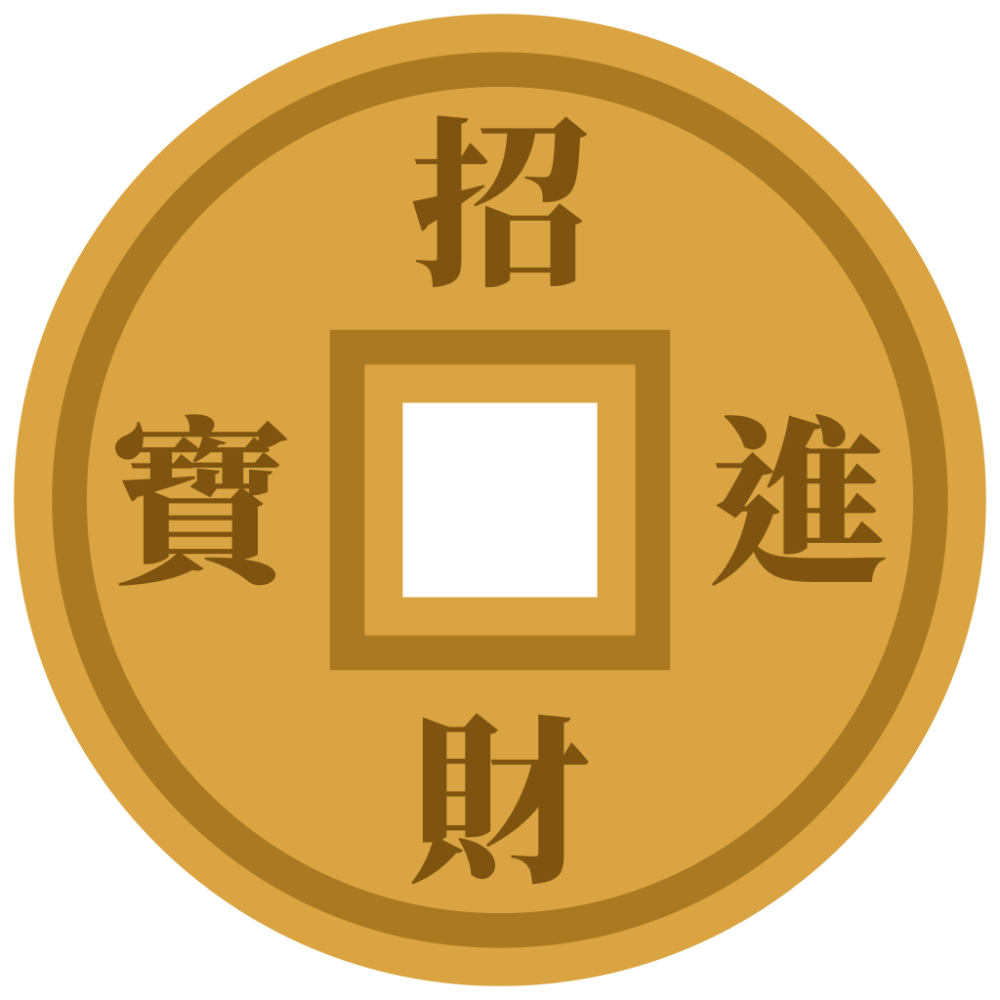
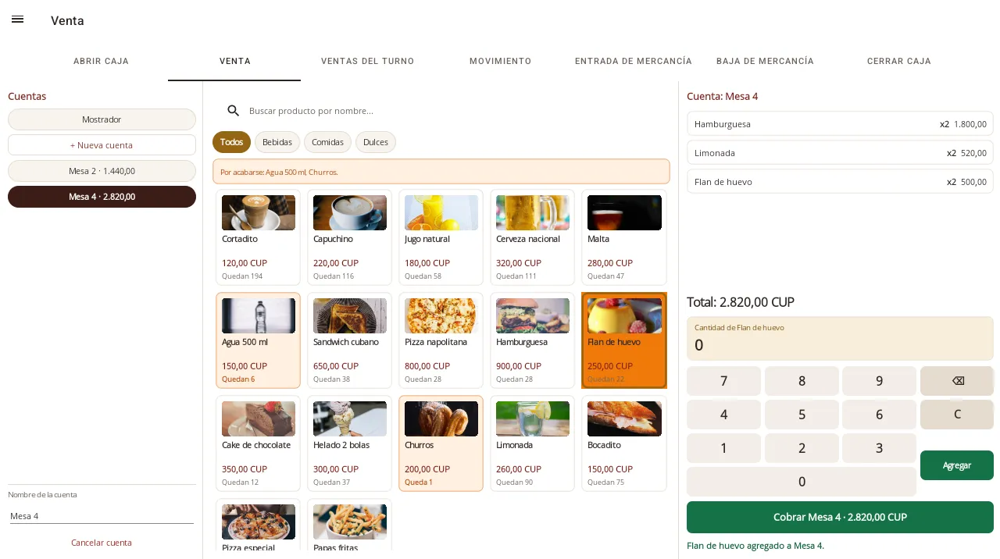
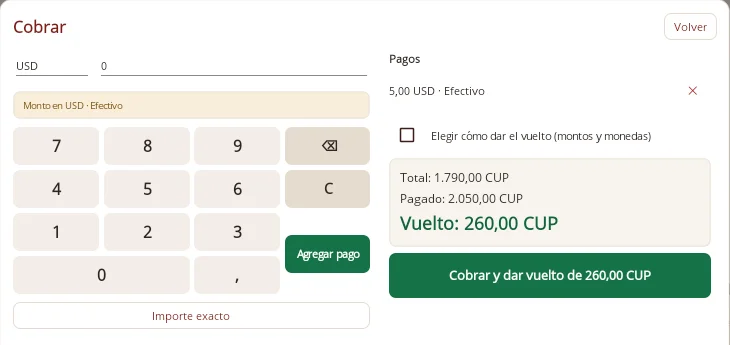
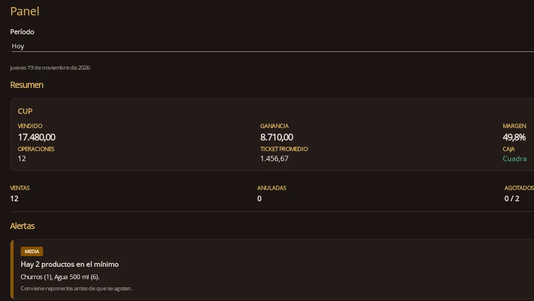
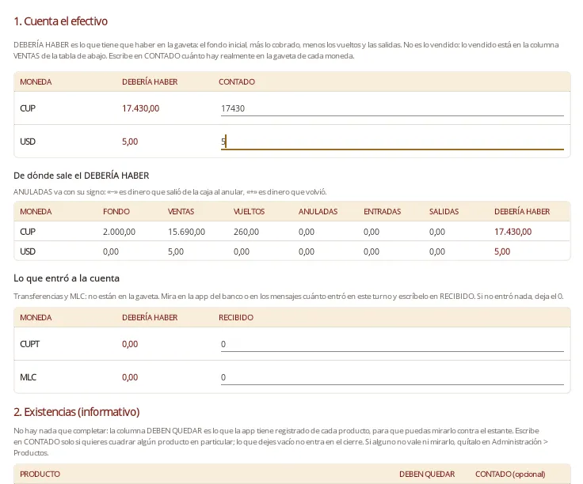
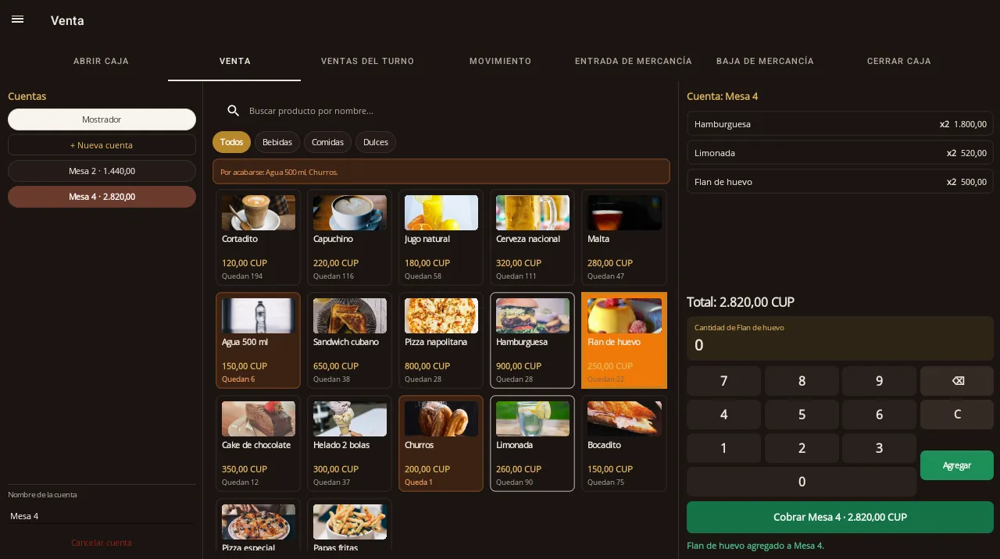

La caja de tu negocio, en orden. Sin internet.
Caishen vende, cobra en CUP, USD o MLC, da el vuelto exacto y te cuadra el cierre del día. Funciona en la PC con Windows y en la tablet Android, aunque se vaya la conexión.
Pruébalo 7 días con todas las funciones, sin clave y sin dar datos.

Hecho para cómo se vende aquí
Varias monedas, tasas que cambian, apagones y cajeros que rotan. Caishen se pensó para eso, no se adaptó de un programa de otro país.
Funciona sin internet
Todo se guarda en el equipo. Si se cae la conexión, sigues vendiendo como si nada. Sin servidores ni cuentas en la nube.
Cobra en varias monedas
CUP, USD, MLC y transferencia con tus propias tasas. El cliente puede pagar mezclando monedas y el vuelto sale calculado.
Cierre que cuadra
Al cerrar el turno cuentas la gaveta y Caishen te dice qué falta o qué sobra en cada moneda. El cierre sale en PDF, listo para mandar por WhatsApp.
Inventario al día
Cada venta descuenta el stock. Registras entradas de mercancía con su costo y las bajas por rotura o vencimiento, y ves qué se está agotando.
Control de los cajeros
Cada uno entra con su PIN. Sacar dinero o anular una venta puede pedir el PIN del dueño, y siempre queda anotado quién hizo qué.
Ganancia real
Reportes de ventas, ganancia por producto y movimientos de mercancía, en PDF o Excel. Con el costo de verdad y las mermas descontadas.
Cuentas abiertas
Para cafeterías y restaurantes: abre una cuenta por mesa o cliente, ve agregando lo que piden y cóbrala al final.
Tickets impresos
Imprime el ticket al cobrar en una impresora térmica de 58 u 80 mm. Es opcional: sin impresora, Caishen funciona igual.
PC o tablet
El mismo programa en Windows y en tablets Android de 10 pulgadas o más. Elige el equipo que ya tienes.
Así se ve en la tablet
Capturas reales de Caishen en una tablet de 10 pulgadas. En la PC con Windows se ve igual.





Pagas una vez. Es tuyo.
Sin mensualidades ni renovaciones. La licencia queda en tu equipo para siempre.
- 7 días de prueba con todo funcionando. Si no te convence, no pagas nada.
- Al terminar la prueba no se pierde nada: tus datos quedan guardados y, al activar, sigues donde lo dejaste.
- La clave llega por WhatsApp, en un archivo que abres desde Caishen. Sin internet en el negocio.
- Una licencia por equipo. Las actualizaciones son gratis.
Descargar Caishen 1.10
Baja el instalador de tu equipo. Si ya tienes Caishen, instala encima: tus datos y tu licencia se conservan.
Windows
PC o laptop- Archivo: Instalar-Caishen-1.10.exe
- Tamaño: 87 MB
- Requiere: Windows 10 o 11 de 64 bits
Cómo instalar
- Abre el archivo descargado.
- Si Windows dice «Windows protegió su PC», toca Más información y luego Ejecutar de todas formas. Sale porque el instalador es nuevo y Windows todavía no lo conoce.
- Sigue los pasos del instalador. Al final, Caishen queda en el menú Inicio y en el Escritorio.
SHA-256: 434c2b2b0f33f10ab2f2b834aa0bf9f4f3832316342071e7980f721592bfea1d
Android
Tablet de 10" o más, en horizontal- Archivo: Caishen-1.10.apk
- Tamaño: 56 MB
- Requiere: tablet Android (no funciona en teléfonos)
Cómo instalar
- Abre el archivo descargado desde la tablet.
- Si Android pide permiso para instalar apps de este origen, actívalo y vuelve atrás.
- Toca Instalar. Caishen aparece con el ícono de la moneda.
SHA-256: e1cbe95d860d611c7ab5cc7a3524ff1813bd5412b44f2f6feb10bc04dce5b011
¿Los datos te salen caros? Pídenos el instalador por WhatsApp y te lo mandamos. También puedes leer el manual completo antes de instalar.
Novedades
Caishen mejora con lo que piden los negocios que lo usan. Esto es lo que trae cada versión.
Caishen 1.10 Actual
- En la tablet: si Caishen se cerraba con una venta a medias, al volver a abrirlo el botón «Cobrar» podía quedar fuera de la pantalla. Arreglado.
- Ajustes internos de licencia y seguridad.
Versiones anteriores
Caishen 1.9
- Ajustes internos de seguridad.
Caishen 1.8
- Anular una venta pide confirmación y, si quien anula es cajero, el PIN del administrador. Se puede apagar en Configuración. Queda anotado quién lo autorizó.
- En el cierre de caja, las ventas anuladas muestran con signo si el dinero salió o volvió a la caja.
- Mejor lectura en modo oscuro y correcciones menores.
Preguntas frecuentes
Lo que más nos preguntan antes de empezar.
¿Necesito internet?
No. Caishen funciona completo sin conexión. Solo hace falta para bajar el instalador, y eso también te lo podemos mandar por WhatsApp.
¿Qué pasa cuando terminan los 7 días de prueba?
Caishen se detiene hasta que lo actives: solo muestra la pantalla para poner la licencia y no deja vender, abrir la caja ni entrar a reportes o productos. Tus datos no se borran: al activar sigues exactamente donde lo dejaste.
¿Puedo usarlo en el teléfono?
No. La pantalla del teléfono es muy chica para vender cómodo. Caishen está hecho para PC con Windows y para tablets Android de 10 pulgadas o más, en horizontal.
¿Mis datos están seguros?
Los datos se guardan cifrados en tu equipo y no salen de ahí. Nadie más que tú los ve.
¿Las actualizaciones se pagan?
No. Bajas la versión nueva, la instalas encima y tu licencia sigue valiendo.
¿Listo para ordenar tu caja?
Escríbenos por WhatsApp para pedir tu licencia, el instalador o resolver cualquier duda.
Escribir por WhatsApp